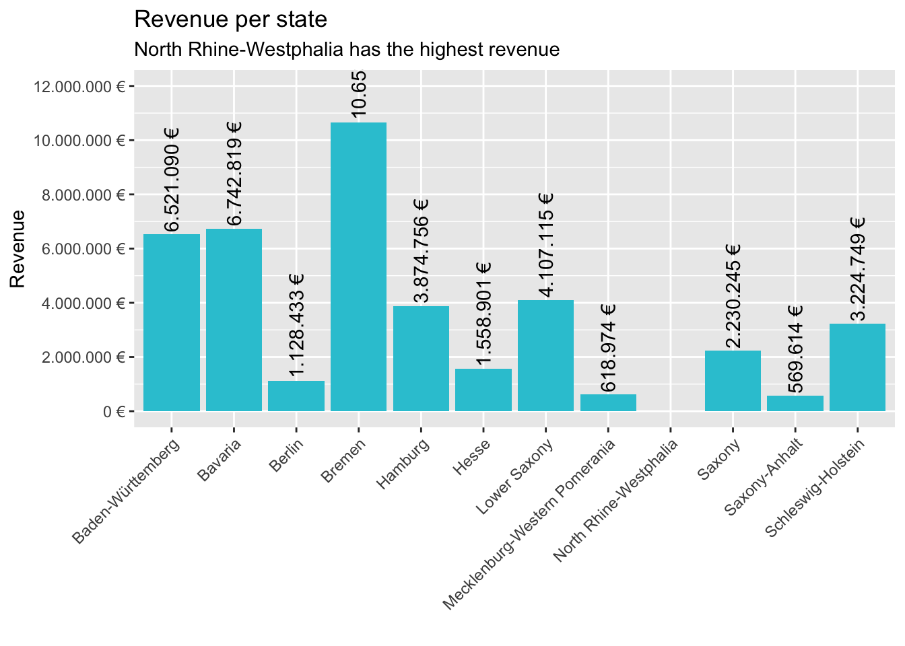
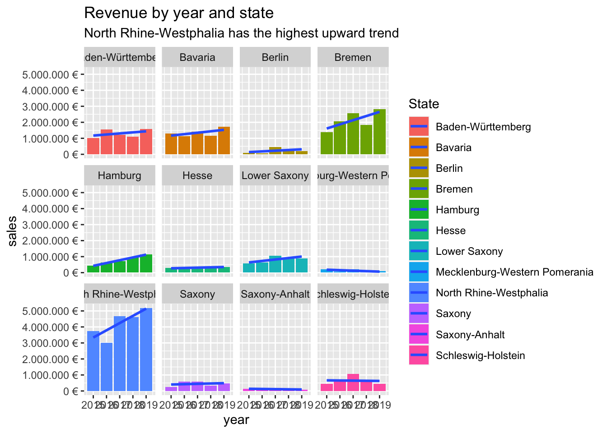

library(tidyverse)
library(readxl)bikes_tbl <- read_excel("~/Documents/GitHub/ws20-business-data-science-basics---lab-journal-ckz-dev/Raw_Data/Intro_to_tidyverse/bikes.xlsx")
bikeshops_tbl <- read_excel("~/Documents/GitHub/ws20-business-data-science-basics---lab-journal-ckz-dev/Raw_Data/Intro_to_tidyverse/bikeshops.xlsx")
orderlines_tbl <- read_excel("~/Documents/GitHub/ws20-business-data-science-basics---lab-journal-ckz-dev/Raw_Data/Intro_to_tidyverse/orderlines.xlsx")glimpse(bikes_tbl)## Rows: 231
## Columns: 9
## $ bike.id <dbl> 2875, 2873, 2874, 2876, 2877, 2225, 2091, 2086, 2088, …
## $ model <chr> "Aeroad CF SL Disc 8.0 Di2", "Aeroad CF SLX Disc 9.0 E…
## $ model.year <dbl> 2020, 2020, 2020, 2020, 2020, 2019, 2019, 2021, 2020, …
## $ frame.material <chr> "carbon", "carbon", "carbon", "carbon", "carbon", "car…
## $ weight <dbl> 7.60, 7.27, 7.10, 7.73, 7.83, 6.80, 6.80, 7.60, 7.30, …
## $ price <dbl> 4579, 6919, 6429, 5069, 3609, 6139, 5359, 2629, 3699, …
## $ category <chr> "Road - Race - Aeroad", "Road - Race - Aeroad", "Road …
## $ gender <chr> "unisex", "unisex", "unisex", "unisex", "unisex", "uni…
## $ url <chr> "https://www.canyon.com/en-de/road-bikes/race-bikes/ae…glimpse(bikeshops_tbl)## Rows: 30
## Columns: 5
## $ bikeshop.id <dbl> 1, 2, 3, 4, 5, 6, 7, 8, 9, 10, 11, 12, 13, 14, 15, 16, 17…
## $ name <chr> "Zum Goldenen Lenker", "AlexandeRad", "Fahrradladen 16", …
## $ location <chr> "Berlin, Berlin", "Hamburg, Hamburg", "Munich, Bavaria", …
## $ lat <dbl> 52.51667, 53.57532, 48.15000, 50.93333, 50.11552, 48.7823…
## $ lng <dbl> 13.400000, 10.015340, 11.583333, 6.950000, 8.684167, 9.18…glimpse(orderlines_tbl)## Rows: 15,644
## Columns: 7
## $ ...1 <chr> "1", "2", "3", "4", "5", "6", "7", "8", "9", "10", "11", …
## $ order.id <dbl> 1, 1, 2, 2, 3, 3, 3, 3, 3, 4, 5, 5, 5, 5, 6, 6, 6, 6, 7, …
## $ order.line <dbl> 1, 2, 1, 2, 1, 2, 3, 4, 5, 1, 1, 2, 3, 4, 1, 2, 3, 4, 1, …
## $ order.date <dttm> 2015-01-07, 2015-01-07, 2015-01-10, 2015-01-10, 2015-01-…
## $ customer.id <dbl> 2, 2, 10, 10, 6, 6, 6, 6, 6, 22, 8, 8, 8, 8, 16, 16, 16, …
## $ product.id <dbl> 2681, 2411, 2629, 2137, 2367, 1973, 2422, 2655, 2247, 240…
## $ quantity <dbl> 1, 1, 1, 1, 1, 1, 1, 1, 1, 1, 1, 2, 1, 1, 1, 1, 1, 1, 1, …bikeshop_orderlines_bikes_joined_tbl <- bikeshops_tbl %>%
left_join(orderlines_tbl, by = c("bikeshop.id" = "customer.id")) %>%
left_join(bikes_tbl, by = c("product.id" = "bike.id"))
glimpse(bikeshop_orderlines_bikes_joined_tbl)## Rows: 15,644
## Columns: 19
## $ bikeshop.id <dbl> 1, 1, 1, 1, 1, 1, 1, 1, 1, 1, 1, 1, 1, 1, 1, 1, 1, 1, …
## $ name <chr> "Zum Goldenen Lenker", "Zum Goldenen Lenker", "Zum Gol…
## $ location <chr> "Berlin, Berlin", "Berlin, Berlin", "Berlin, Berlin", …
## $ lat <dbl> 52.51667, 52.51667, 52.51667, 52.51667, 52.51667, 52.5…
## $ lng <dbl> 13.4, 13.4, 13.4, 13.4, 13.4, 13.4, 13.4, 13.4, 13.4, …
## $ ...1 <chr> "473", "474", "475", "476", "477", "478", "479", "480"…
## $ order.id <dbl> 70, 70, 70, 70, 70, 70, 70, 70, 70, 72, 72, 143, 179, …
## $ order.line <dbl> 1, 2, 3, 4, 5, 6, 7, 8, 9, 1, 2, 1, 1, 2, 3, 1, 1, 2, …
## $ order.date <dttm> 2015-03-28, 2015-03-28, 2015-03-28, 2015-03-28, 2015-…
## $ product.id <dbl> 2140, 2803, 2625, 2436, 2403, 2876, 2251, 2551, 2467, …
## $ quantity <dbl> 1, 1, 1, 7, 1, 1, 1, 1, 1, 1, 1, 1, 1, 1, 4, 3, 1, 1, …
## $ model <chr> "Speedmax CF 8.0 Di2", "Precede:ON CF 8", "Neuron 6", …
## $ model.year <dbl> 2020, 2021, 2021, 2020, 2020, 2020, 2021, 2021, 2020, …
## $ frame.material <chr> "carbon", "carbon", "aluminium", "carbon", "carbon", "…
## $ weight <dbl> 8.50, 21.06, 15.26, 11.40, 7.40, 7.73, 15.80, 17.10, 1…
## $ price <dbl> 3599, 4189, 1849, 3599, 3219, 5069, 5649, 4869, 1749, …
## $ category <chr> "Road - Triathlon Bike - Speedmax", "E-Bikes - E-City …
## $ gender <chr> "unisex", "unisex", "unisex", "unisex", "female", "uni…
## $ url <chr> "https://www.canyon.com/en-de/road-bikes/triathlon-bik…bikeshop_orderlines_bikes_wrangled_tbl <- bikeshop_orderlines_bikes_joined_tbl %>%
# 5.1 separate locations
separate(col = location,
into = c("city", "state"),
sep = ", ") %>%
# 5.2 clean
select(-ends_with(".id"),-city,-lat,-lng,-...1,-model,-model.year,-order.line,-frame.material,-weight,-category,-gender,-url) %>%
# 5.3 Add the total price (price * quantity)
mutate(total.price = price * quantity) %>%
# 5.4 Rename
rename(bikeshop = name) %>%
set_names(names(.) %>% str_replace_all("\\.", "_"))
glimpse(bikeshop_orderlines_bikes_wrangled_tbl)## Rows: 15,644
## Columns: 6
## $ bikeshop <chr> "Zum Goldenen Lenker", "Zum Goldenen Lenker", "Zum Golden…
## $ state <chr> "Berlin", "Berlin", "Berlin", "Berlin", "Berlin", "Berlin…
## $ order_date <dttm> 2015-03-28, 2015-03-28, 2015-03-28, 2015-03-28, 2015-03-…
## $ quantity <dbl> 1, 1, 1, 7, 1, 1, 1, 1, 1, 1, 1, 1, 1, 1, 4, 3, 1, 1, 2, …
## $ price <dbl> 3599, 4189, 1849, 3599, 3219, 5069, 5649, 4869, 1749, 360…
## $ total_price <dbl> 3599, 4189, 1849, 25193, 3219, 5069, 5649, 4869, 1749, 36…sales_by_state_tbl <- bikeshop_orderlines_bikes_wrangled_tbl %>%
# Select columns
select(state, total_price) %>%
# Grouping by year and summarizing sales
group_by(state) %>%
summarize(sales = sum(total_price)) %>%
mutate(sales_text = scales::dollar(sales, big.mark = ".",
decimal.mark = ",",
prefix = "",
suffix = " €"))
glimpse(sales_by_state_tbl)## Rows: 12
## Columns: 3
## $ state <chr> "Baden-Württemberg", "Bavaria", "Berlin", "Bremen", "Hambu…
## $ sales <dbl> 6521090, 6742819, 1128433, 10653499, 3874756, 1558901, 410…
## $ sales_text <chr> "6.521.090 €", "6.742.819 €", "1.128.433 €", "10.653.499 €…sales_by_state_tbl%>%
# Setup canvas with the columns states (x-axis) and sales (y-axis)
ggplot(aes(x = state, y = sales)) +
# Geometries
geom_col(fill = "#2DC6D6") + # Use geom_col for a bar plot
geom_text(aes(label = sales_text),angle = 90,hjust="bottom",nudge_y = 100000) + # Adding labels to the bars
# Formatting
scale_y_continuous(labels = scales::dollar_format(big.mark = ".",
decimal.mark = ",",
prefix = "",
suffix = " €"),n.breaks = 8, limits = c(0,12000000)) +
theme(axis.text.x = element_text(angle = 45, hjust = 1))+
labs(
title = "Revenue per state",
# Dynamischer Subtitle mit paste Funktion
subtitle = paste(sales_by_state_tbl$state[sales_by_state_tbl$sales==max(sales_by_state_tbl$sales)],"has the highest revenue"),
x = "", # Override defaults for x and y
y = "Revenue"
)
library(lubridate)sales_by_year_state_tbl <- bikeshop_orderlines_bikes_wrangled_tbl %>%
# Select columns and add a year
select(order_date, total_price, state) %>%
mutate(year = year(order_date)) %>%
# Group by and summarize year and main catgegory
group_by(year, state) %>%
summarise(sales = sum(total_price)) %>%
ungroup() %>%
# Format $ Text
mutate(sales_text = scales::dollar(sales, big.mark = ".",
decimal.mark = ",",
prefix = "",
suffix = " €"))
glimpse(sales_by_year_state_tbl)## Rows: 60
## Columns: 4
## $ year <dbl> 2015, 2015, 2015, 2015, 2015, 2015, 2015, 2015, 2015, 2015…
## $ state <chr> "Baden-Württemberg", "Bavaria", "Berlin", "Bremen", "Hambu…
## $ sales <dbl> 1031924, 1301461, 95853, 1395912, 423090, 308609, 584386, …
## $ sales_text <chr> "1.031.924 €", "1.301.461 €", "95.853 €", "1.395.912 €", "…sales_by_year_state_tbl %>%
# Set up x, y, fill
ggplot(aes(x = year, y = sales, fill = state)) +
# Geometries
geom_col()+ # Run up to here to get a stacked bar plot
# Facet
facet_wrap(~ state)+
# Trendline
geom_smooth(method = "lm", se = FALSE) +
# Formatting
scale_y_continuous(labels = scales::dollar_format(big.mark = ".",
decimal.mark = ",",
prefix = "",
suffix = " €")) +
labs(
title = "Revenue by year and state",
subtitle = "North Rhine-Westphalia has the highest upward trend",
fill = "State" # Changes the legend name
)
bikeshop_orderlines_bikes_wrangled_tbl %>%
write_rds("~/Documents/GitHub/ws20-business-data-science-basics---lab-journal-ckz-dev/Manipulated_Data/Intro_to_tidyverse/bikeshop_orderlines.rds")